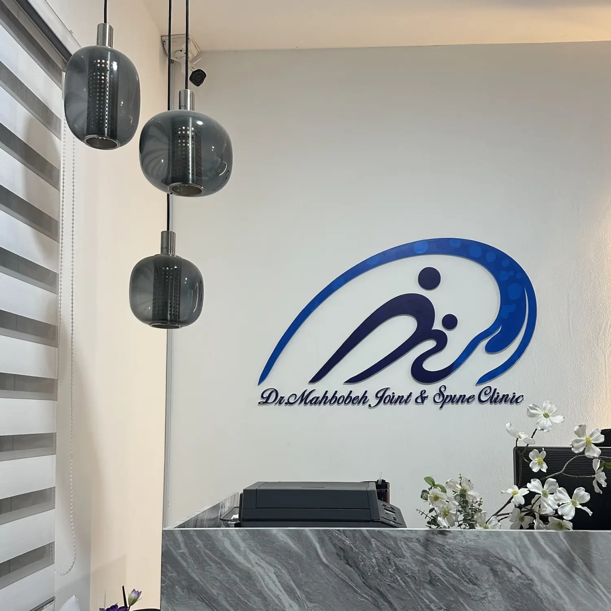
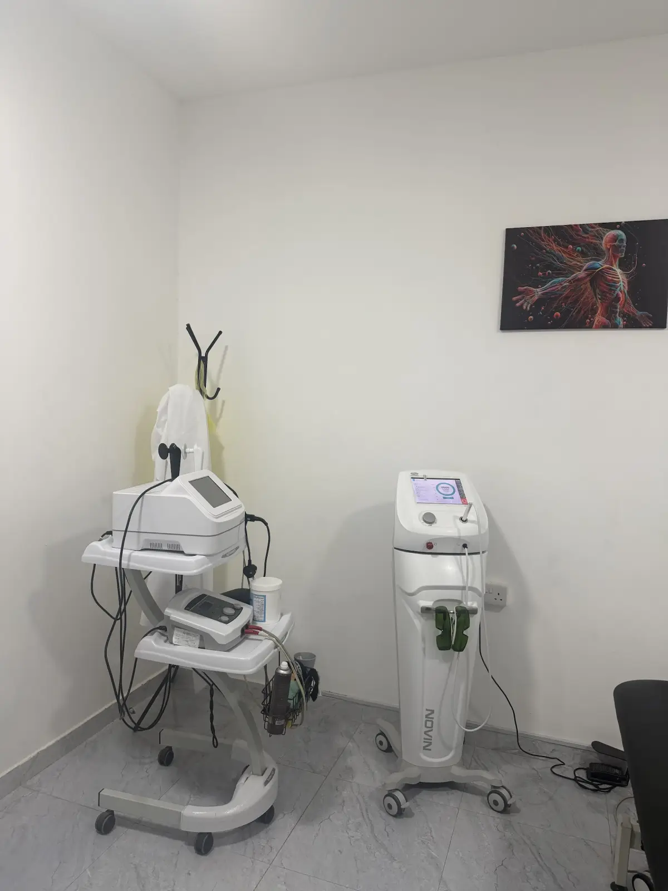
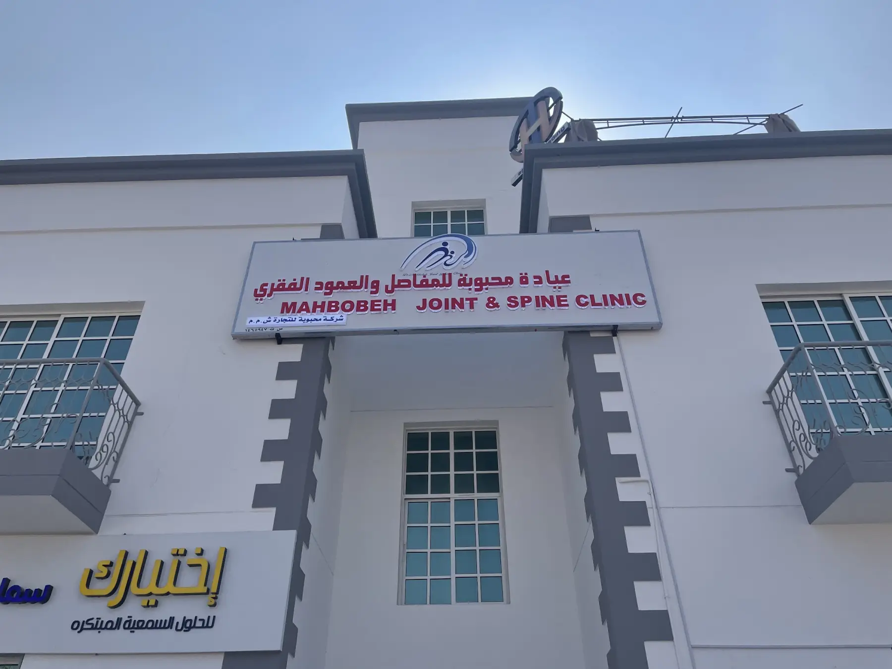

العلاج الطبيعيلآلام المفاصل والظهرفي العذيبة.
علاج طبيعي عظمي مع محبوبة ساماني، بخبرة تزيد على عشر سنوات. نبدأ بتقييم كامل لحالتك، ثم العلاج، ونتابع تقدّمك حتى تتعافى.

السبت إلى الخميس، 10 صباحًا – 8 مساءً. الجمعة مغلق.
استشارات عن بُعد وزيارات منزلية أيضًا.
اتصل +968 7967 4033ماذا نعالج
الآلام الحادة والمزمنة في العضلات والمفاصل والعمود الفقري. إذا لم تجد حالتك في القائمة، اتصل واسأل.
- آلام الظهر
- آلام الرقبة
- آلام الكتف واليد والكوع
- آلام الركبة ومنها خشونة الركبة
- آلام القدم التهاب اللفافة الأخمصية، شوكة العقب
- آلام الساق
- الصداع والشقيقة
- الدوخة والدوار
- آلام الفك
- شلل الوجه (بِل)
- إصابات الملاعب
- التأهيل بعد الكسور
- اضطرابات الجهاز اللمفاوي
- آلام الحوض

محبوبة ساماني
أخصائية علاج طبيعي عظمي
تعالج محبوبة طيفًا واسعًا من آلام العضلات والمفاصل بالإبر الجافة، والوخز بالإبر، والعلاج اليدوي، والعلاج الكهربائي، والعلاج بالتمارين، والتيبينغ. ولها خبرة طويلة في علاج مشاكل الحوض لدى الرجال والنساء.
- +10أكثر من عشر سنوات من الممارسة
- 2اختراعان من تطويرها في العلاج الطبيعي
- NKTممارِسة معتمدة في NeuroKinetic Therapy، المستويان 1 و2
داخل العيادة
في غرف العلاج: ليزر عالي الطاقة، ولا يتوفر في كثير من عيادات مسقط، إلى جانب الموجات الصادمة، والموجات فوق الصوتية، والتحفيز الكهربائي، والأشعة تحت الحمراء، والوخز الكهربائي بالإبر. تساعد على تخفيف الالتهاب وتسريع الشفاء.

الاستقبال
هنا تسجّل وصولك

غرفة العلاج
إحدى غرف العلاج لدينا

شقة 1
لوحة بابنا مع رقمي الجوال

بناية 497
اللوحة على شارع 18 نوفمبر
4.9/5
تقييم Google
تقييم العيادة على خرائط Google، من 638 تقييمًا للمراجعين.كما يظهر على خرائط Google، نوفمبر 2026.
اقرأ التقييمات على Googleأيضًا في العيادة
إلى جانب علاج الألم. ونقدم باقات علاج بتكلفة مناسبة، ومواعيد مرنة تناسب وقتك.
مشاكل قاع الحوض
مشاكل التبول والإخراج (الإسهال والإمساك)، والمشاكل الجنسية، والهبوط، للرجال والنساء.
التأهيل بعد العمليات
بعد عمليات تبديل المفاصل، والرباط الصليبي، والغضروف الهلالي.
تصحيح القوام
لتحدّب أعلى الظهر وزيادة تقعّر أسفل الظهر.
العلاج بالتمارين
لتقوية العضلات والمساعدة على إنقاص الوزن.
الوخز بالإبر التجميلي
لتجاعيد الوجه، وللمساعدة على إنقاص الوزن.
التدليك العلاجي والاسترخائي
على يد معالجين مدرَّبين.
استشارات عن بُعد وزيارات منزلية
إذا لم تستطع الحضور، نأتي إليك أو نتحدث عن بُعد.

موقعنا
بناية 497، شقة 1، شارع 18 نوفمبر، العذيبة، مسقط
قرب الفير هايبرماركت.
مفتوح الآن| السبت | 10 ص – 8 م |
| الأحد | 10 ص – 8 م |
| الاثنين | 10 ص – 8 م |
| الثلاثاء | 10 ص – 8 م |
| الأربعاء | 10 ص – 8 م |
| الخميس | 10 ص – 8 م |
| الجمعة | مغلق |